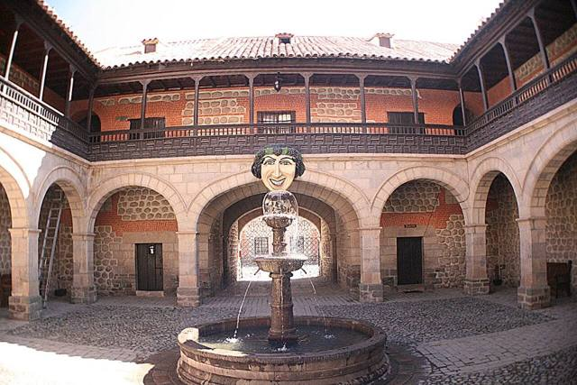

Candelaria
Département de Chuquisaca · Culture et histoire
Candelaria est un village de la culture yampara, à l'est de Tarabuco. Autour d'une ancienne hacienda coloniale, les familles accueillent les visiteurs pour partager leur vie rurale et leurs tissages, parmi les plus fins de la région. Une immersion tranquille et authentique, loin des circuits.
2 700 maltitude
1 joursur place
À faire
- Ancienne hacienda coloniale
- Tissages yampara et démonstrations au métier
- Vie rurale et accueil chez l'habitant
À goûter
Conseil. Accès depuis Sucre par Tarabuco ; mieux avec une agence de Sucre qui organise l'accueil.
À découvrir ici
- Artisanat et marchés Tissages yampara de TarabucoDes tissus aux motifs très fins, souvent des scènes de la vie quotidienne et des animaux, tissés à la main au métier. Le marché du dimanche est le meilleur endroit pour en trouver.
Comment aller à Candelaria
Sucre Route (bus, voiture) · environ 3 h
Par Tarabuco, en bus puis transport local, ou avec une agence de Sucre.
Autres lieux de la région
 PotosíL'ancienne ville la plus riche du monde grâce à l'argent du Cerro Rico. Classée UNESCO.
PotosíL'ancienne ville la plus riche du monde grâce à l'argent du Cerro Rico. Classée UNESCO.
Casa Nacional de Moneda (Potosí)La Monnaie royale où l'argent du Cerro Rico devenait pièces, aujourd'hui le grand musée de Bolivie. Ojo del Inca (Tarapaya)Une lagune d'eau chaude parfaitement ronde, à 30 minutes de Potosí.
Ojo del Inca (Tarapaya)Une lagune d'eau chaude parfaitement ronde, à 30 minutes de Potosí. SucreLa « ville blanche », capitale constitutionnelle : la plus belle ville coloniale du pays.
SucreLa « ville blanche », capitale constitutionnelle : la plus belle ville coloniale du pays. TarabucoGrand marché du dimanche des communautés yampara, textiles remarquables.
TarabucoGrand marché du dimanche des communautés yampara, textiles remarquables.- ZudáñezPetite ville de vallée liée aux guerres d'indépendance, à l'est de Sucre.
 Cratère de MaraguaSynclinal géant aux couleurs rouges et violettes, villages de tisserands jalq'a.
Cratère de MaraguaSynclinal géant aux couleurs rouges et violettes, villages de tisserands jalq'a.